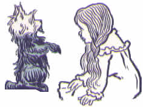

lo se mànci te màkfa pe la .oz.
sei la selpà'i cu fànva
ni'o ni'o pa mo'o
lo vilcarbì'e
ni'o la .dorotis. cu xàbju lo mìdju be lo gànra sastù'a pe la .kanzas. fi'o kànsa la nakfàmti .xenris. ku noi te cànge ku'o .e la fetfàmti .em. ku noi spèni lo te cànge .i lo zdàni cu cmàlu ki'u lo nu lo mùdri poi zy. ke'a zìlzba cu jai sàrcu fai lo ka lo càrce cu bèvri ce'u ve'a lo mìnli be li so'i .i zy. se pàgbu lo vo bìtmu .e lo lòldi .e lo drùdi vu'o noi sùmji fa lo pa kùmfa .i ky. vàsru lo furtìrse se jvìnu tòknu .e lo kajnytà'e be lo pàlta be'o .e lo jùbme .e lo ci ji'i vo stìzu .e lo ckàna .i la nakfàmti .xenris. jo'u la fetfàmti .em. cu pònse lo bàrda ckàna be bu'u pa lo kòjna .i je la .dorotis. cu go'i lo cmàlu ckàna be bu'u lo dràta kòjna .i zàsti fa no sai drùsro .e no lolnitkù'a po'u na'e bo lo cmàlu kèvna poi pu te kàkpa lo lòldi zi'e poi se cmène «lu vilcarbì'e lolnitkù'a li'u» noi lo lànzu ka'e klàma la'e ke'a va'o lo nu pa lo bàrda carbì'e cu tolcànci fau lo nu tsàli bànzu lo nu da'i màrxa ro lo dìnju pe lo ra ve mùvdu .i plùta lo kèvna fo lo lòlvro be bu'u lo lòldi mìdju be'o poi lo rajysèrti cu cnìta ve klàma lo cmàlu je mànku kèvna
ni'o la .dorotis. ca lo nu sànli bu'u lo zdàni vòrme gi'e ru'u càtlu cu ka'e vìska fa'a ro da no na'e bo lo gànra je grùsi sastù'a .i je no trìcu .e no zdàni cu zvàti lo gànra je pìnta tùmla poi kùspe lo kòrbi be lo tsàni bu'u ro lo fàrna .i lo sòlri nu glàre cu ba'o rìnka lo nu lo se plìxa tùmla cu bìnxo lo grùsi pèsxu poi se fènra lo cmàlu .i lo sràsu ku ji'a sai na crìno .i ki'u bo lo solgù'i cu ba'o jèlgau lo jìpno be lo clàni sràsu co'u lo nu sy. cu skàri lo mìntu grùsi se skàri poi se vìska bu'u ro da .i pa roi ku lo zdàni cu pu se cintypù'i .i ku'i lo sòlri cu gàsnu lo nu lo cìnta cu vàsru lo vàrboi .i je lo càrvi cu lùmci vìmcu .i je ca ku lo zdàni cu kàndi gi'e grùsi vau du'i tu'a ro dràta
ni'o la .em. ca lo nu klàma ti te zu'e lo nu bu'u xàbju cu cìtno je mèlbi spèni .i lo sòlri jo'u lo brìfe cu cnègau .e bu ji'a .i crìgau lo kànla lo ka càrmi kei ja'e lo nu lo kànla cu sàmpu grùsi .i crìgau lo mòlmla .e lo ctèbi lo ka xùnre kei ja'e lo nu grùsi fa vo'e ji'a .i .e bu cìnla gi'e ca no roi cìsma .i ca lo nu la .dorotis. noi rìrcau cu pa re'u klàma .e bu kei .e bu tai se spàji lo nu cmìla pe lo vèrba ja'e lo nu krìxa gi'e da'èrgau lo xànce lo rìsna ca ro nu tìrna lo glèki vòksa be la .dorotis .i .e bu za'o càtlu lo cmàlu nìxli fau lo nu mànci lo nu zàsti fa da poi jai mu'i cmìla fai ny
ni'o la nakfàmti .xenris. cu no roi cmìla .i xy. to'e làzni gùnka co'a lo cèrni je co'u lo nìcte gi'e na djùno lo du'u lo si'o glèki cu mo kau .i xy. ji'a cu grùsi fe'e co'a lo ri clàni xèjykre je fe'e co'u lo rùfsu cùtci gi'e se jvìnu lo jùrsa .e lo jùnri gi'e so'u roi tàvla
ni'o du la .totos. fa lo jai gau cmìla be fai la .dorotis .i ty. boi dy. nùrgau lo nu bìnxo lo grùsi dùnli be lo dràta vànbi .i la .totos. na grùsi .i ty. cmàlu ke xèkri gèrku gi'e se kèrfa lo clàni ke sìlka sìmlu gi'e se kànla lo cmàlu xèkri poi glèki kalga'òsli bu'u lo re mlàna be lo xàjmi je cmàtce nàzbi .i la .totos. cu kèlci ze'a lo mùlno djèdi .i je la .dorotis. cu kelkànsa gi'e mùtce lo ka se dìrba ty

ni'o ku'i ca lo càbdei cu na kèlci .i la nakfàmti .xenris. cu zùtse lo vòrme sèrti gi'e xànka càtlu lo tsàni noi grùsi ba'e zmàdu lo fàdni .i la .dorotis. cu sànli bu'u lo vòrme fau lo nu jgàri la .totos. lo bìrka kei gi'e si'a càtlu lo tsàni .i la fetfàmti .em. ca'o lùmci lo pàlta
ni'o ra'i lo dàrno bèrti cu tìrna lo dìzlo tònga se pàtcmo pe lo brìfe .i je la nakfàmti .xenris .e la .dorotis. cu vìska lo nu lo sràsu cu se krorì'a lo jbibì'o viltì'a tai tu'a lo bòxna .i ba bo lo kìnli nu sìclu bu'u lo vàcri ra'i lo snànu cu cfàri .i je lo re da ca lo nu fa'a càtlu cu vìska lo cmàlu bòxna be lo sràsu bei ra'i lo di'u fàrna ku ji'a
ni'o ca bo sùksa fa lo nu la nakfàmti .xenris. cu sa'irbì'o
ni'o «lu lo vilcarbì'e ti mùvdu doi .em. –sei xy. fi lo spèni cu clàdu cùsku– .i mi ba kùrji lo dànlu li'u» .i ba bo bàjra fa'a lo ta'òzda noi lo bàkni jo'u lo xìrma cu se sètca fi ke'a
ni'o la fetfàmti .em. cu co'u gùnka gi'e klàma lo vòrme .i .e bu ca lo nu ze'i pa re'u càtlu cu djùno lo du'u ma kau ckàpe
ni'o «lu ko sùtra doi .dorotis. –sei .e bu krìxa– .i ko bàjykla lo lolnitkù'a li'u»
ni'o la .totos. cu plìpe fi lo bìrka be dy. gi'e sezyselmràgau ni'a lo ckàna .i je lo nìxli cu co'a cpàcu klàma .i la fetfàmti .em. fau lo nu tèrpa mùtce cu kàrgau lo lòlvro be bu'u lo lòldi gi'e fa'a ni'a cpàre lo rajysèrti se ka'a lo cmàlu je mànku kèvna .i la .dorotis. cu ro mai kàvbu la .totos. gi'e co'a jèrsi lo fetfàmti .i ca lo nu ba'o xàdba pàgre lo kùmfa cu se sànce lo clàdu sàvru fa lo brìfe .i je lo zdàni cu tai rùfsu slìlu ja'e lo nu dy. gau co'u sànli gi'e jai sùksa fai lo ka tsebì'o lo lòldi
ni'o ba bo lo cìzra cu fàsnu
ni'o lo zdàni cu re ji'i ci roi càrna gi'e màsno lo ka galzè'a pa'o lo vàcri .i la .dorotis. cu cìnmo lo sìmsa be lo ka galzè'a fau lo nu nènri lo vartìsyboi
ni'o lo bèrti fa'u snànu brìfe cu pensì'u lo stùzi be lo zdàni ja'e lo nu zy. bìnxo lo sàtci mìdju be lo vilcarbì'e .i bu'u lo mìdju be lo vilcarbì'e lo vàcri cu ta'e bìfcau .i ku'i lo bàrda ni lo brìfe cu dànre bu'u ro lo mlàna be lo zdàni cu rìnka lo nu lo zdàni cu zènba je zènba lo ka gàltu kei co'u lo nu zvàti lo pràne galràipau be lo vilcarbì'e .i je stàli gy. gi'e to'o se bèvri ve'a lo mìnli be li so'i se kai lo ka frìli dùnli lo ka bèvri lo pìmlu
ni'o mùtce lo ka mànku .i je lo brìfe cu màbla cmòni ru'u la .dorotis .i ku'i dy. co'a sànji lo du'u se màrce se frìli .i ba lo pa moi be lo su'o mei co nu ru'u càrna .e lo pa dràta jai ca nu lo zdàni cu mùtce lo ka mlàpau càrna cu cìnmo lo ka toljùrsa se slìgau tai tu'a lo cìfnu pe bu'u lo slìcka

ni'o la .totos. na nèlci .i bàjra ru'u bu'u lo kùmfa fau lo nu zvàti nu'i ge ca da ti nu'u gi ca de ta nu'u fau lo nu clàdu cmòni .i ku'i la .dorotis. cu smàji zùtse lo lòldi gi'e dènpa te zu'e lo nu zgàna lo da'i ba fàsnu
ni'o pa roi ku la .totos. cu bìnxo lo dùkse be lo ka jìbni lo kàlri lòlvro kei gi'e pa'o fàrlu .i pa mai lo cmàlu nìxli cu jìnvi lo du'u ba'o cìrko ty .i ku'i ba zi vìska lo nu pa lo kèrlo cu pàgre lo vòrme .i ki'u bo lo bàrda ni dànre pe lo vàcri cu stògau ty. lo ka gàltu kei ja'e lo nu na ka'e fàrlu .i ny. cpàre fi lo vòrme gi'e co'a jgàri la .totos. fo lo kèrlo gi'e làcpu ty. fa'a lo nènri be lo kùmfa gi'e ba bo ga'òrgau lo lòlvro te zu'e lo nu no se jmìna snùti ka'e fàsnu
ni'o so'i lo càcra cu se fànmo .i je màsno fa lo nu la .dorotis. cu bìnxo lo ka co'u tèrpa .i ku'i dy. cìnmo lo ka sèpcni mùtce .i je lo brìfe cu tai clàdu se sànce ja'e lo nu dy. na ru'e bìnxo lo tinynalkà'e .i ca lo tolfà'o dy. kùcli lo du'u xu kau dy. ba se màrxa ja'e lo so'i spìsa va'o lo nu lo zdàni cu di'a fàrlu .i ku'i fau lo nu lo càcra cu se fànmo .e lo nu no xlàtce cu fàsnu kei dy. co'u xànka gi'e zu'ejdi lo ka smàcni dènpa gi'e fàcki lo du'u lo bàlvi cu mo kau .i ro mai dy. cpàre lo dèsku lòldi lo vo'a ckàna gi'e vrebì'o lo gàpru .i je la .totos. cu jèrsi gi'e vrebì'o lo jìbni be dy
ni'o to'e ki'u nai lo nu lo zdàni cu slìlu .e lo nu sàvru se sànce fa lo brìfe kei la .dorotis. cu ba zi ga'òrgau lo kànla gi'e sipybì'o
ni'o ni'o re mo'o
lo nu pènmi lo màxpre
ni'o la .dorotis. cu se cikrì'a lo jènca poi tai sùksa gi'e tai jùrsa vau ja'e lo nu da'i la .dorotis. va'o lo nu na cpàna lo rànti ckàna cu se xràni .i da'i nai lo jènca cu rìnka lo nu dy. cu bàrda vàsxu gi'e kùcli lo du'u ma kau pu fàsnu .i je la .totos. cu pùnji lo ri lènku ke cmàlu nàzbi lo flìra be dy. gi'e bàdri pàtcmo .i la .dorotis. cu tsebì'o gi'e sajbì'o lo nu ge nai lo zdàni cu mùvdu gi na'e mànku ri'a lo nu lo càrmi solgù'i cu pàgre lo cànko fau lo nu cùlgau lo cmàlu kùmfa .i dy. plìpe fi lo ri ckàna gi'e bàjra fau lo nu la .totos. cu jìbni jèrsi kei gi'e kàrgau lo vòrme
ni'o lo cmàlu nìxli cu mànci krìxa gi'e ru'u càtlu fau lo nu lo kànla cu bànro je bànro se ja'e lo nu vìska lo tai se mànci
ni'o lo vilcarbì'e pu toljùrsa mùtce pùnji (to ma'i lo vilcarbì'e toi) lo zdàni lo mìdju be lo se mànci mèlbi gùgde .i zvàti fa lo kùkte sastù'a pe lo mèlbi trìcu poi se dàndu lo rìcfu je kùkte grùte .i lo fòldi be lo mlècai xrùla cu zvàti ro lo mlàna .i je lo cìpni pe lo rìrci je càrmi pìmlu cu sànga gi'e na'irsùtyvoi ne'i lo trìcu .e lo dèmspa .i va lo tòrdu mìlxe da cmàlu rìrxe gi'e mùvdu je mìrcai pàgre lo jbìni be lo crìno sastù'a gi'e kàndi bàcru se pi'o lo vòksa poi mùtce lo ka jai te ckìre fi lo cmàlu nìxli poi xàbju ze'a lo tai clàni lo sùdga je grùsi sastù'a
ni'o la .dorotis. ca lo nu ca'o kùcli càtlu lo cìzra joi mèlbi vànbi cu co'a sànji lo poi fa'a dy. klàma ku'o gùnma be lo cìzrai be lo ro prènu poi dy. ke'a ba'o vìska .i lo prènu cu cmàmau lo màkcu poi dy. ke'a se slàbu .i ku'i ji'a na mùtce lo ka cmàlu .i je'u py. sìmlu lo ka cladù'i la .dorotis. ku noi bànro sùtra ma'i lo na'àsmi vèrba kei gi'e ku'i jvìnu sìmlu lo ka na'àzma dy. li so'i

ni'o gùnma lo ci nànmu .e lo pa nìnmu .i je ro se go'i cu dàsni lo cìzra .i dàsni lo cùkla màpku poi kònju fi lo cmàlu poi gùtci li pa lo ni gàpru lo stèdu ku'o ku'o zi'e pe lo màpku srùri ke cmàlu jànbe poi jabysèlsna lo tìtla ca lo nu mùvdu .i lo màpku pe lo nànmu cu blànu .i je lo màpku pe lo cmàlu nìnmu cu blàbi .i je ny. cu dàsni lo blàbi pàstu poi cìnje dàndu lo jànco .i py. se bàrna lo so'i tàrci poi càrmi bu'u lo solgù'i tai tu'a lo tàbjme .i lo nànmu cu dàsni lo blànu pe lo mìntu selskàlei pe lo màpku gi'e dàsni lo xàmgu se spàli cùtci poi lo blànu bòlci cu jòrne ke'a lo jìpno .i lo nànmu (to la .dorotis. cu jìnvi toi) cu kàijbi lo ka dùnli la nakfàmti .xenris. lo ka tolcì'o .i ki'u bo re lo nànmu cu se xèjykre .i ku'i lo cmàlu ke tolcì'o nìnmu cu ju'o sai tolcì'o zmàdu mùtce .i lo flìra be ny. cu se gàcri lo cìnje .i lo kèrfa be ny. cu na ru'e blàbi .i je ny. cu tìnsa nàlmli càdzu
ni'o lo bi'u nai prènu ca lo nu jbibì'o lo zdàni noi la .dorotis. cu sànli lo ke'a vòrme cu klàsti gi'e làuble càsnu vau tai lo nu tèrpa lo nu zènba lo ka jìbni .i ku'i lo cmàlu ke tolcì'o nìnmu cu klàma la .dorotis. gi'e krobì'o rìnsa gi'e cùsku se pi'o lo tìtla vòksa
ni'o «lu do zanvì'e doi nòbli te màkfa lo gùgde be la màxpre .i mi'a do tai ckìre lo nu do ba'o càtra la pàlci termafyfè'i pe la stùna kei .e lo nu tolpìfygau lo mi'a se gùgde li'u»
ni'o la .dorotis. cu tinjù'i lo se cùsku fau lo nu se cfìpu .i ki'u ma lo cmàlu nìnmu cu te cmène dy. «lu te màkfa li'u» gi'e xùsra lo du'u dy. càtra la pàlci termafyfè'i pe la stùna .i la .dorotis. cu zernalfù'e je nalckàpe ke cmàlu nìxli gi'e se bèvri lo vilcarbì'e ve'a lo mìnli be li so'i .i je ze'a pi ro lo nunjì'e dy. no roi càtra da
ni'o ku'i lo cmàlu nìnmu cu za'a kànpe lo nu dy. cu spùda .i se ki'u bo la .dorotis. se cau lo nu dènpa cu cùsku «lu do mùtce lo ka xèndo .i ku'i ju'o da se srèra .i mi no da càtra li'u»
ni'o «lu se ju lo do zdàni cu co'e –sei lo cmàlu ke tolcì'o nìnmu fau lo nu cìsma cu cùsku– .i je la'e di'u mìntu .i ko càtlu –sei ny. fau lo nu degjà'o lo kòjna be lo zdàni cu di'a co'e– .i lo re jàmfu be ty. cu za'o bàncu fi lo cnìta be lo mùdri blìku li'u»
ni'o la .dorotis. cu càtlu gi'e krìxa co tèrpa .i je'u va ku lo cnìta be lo kòjna be lo bàrda kàmju poi lo zdàni cu se sàrji ke'a cu kràsi lo re jàmfu poi dàsni lo rìjno cùtci pe lo kìnli cràpau

ni'o «lu ĭi ĭi –sei la .dorotis. cu tèrpa krìxa be fau lo nu xànce jalsìmgau– .i ju'o lo zdàni pu fàrlu ta .i .ei mi'o mo li'u»
ni'o «lu no da se bìlga –sei lo cmàlu nìnmu cu nalselrà'u cùsku– li'u»
ni'o «lu ku'i ta mo –sei la .dorotis. cu rètsku– li'u»
ni'o «lu ke'u ta me la pàlci te màkfa pe la stùna –sei lo cmàlu nìnmu cu spùsku– .i se pìnfu ro la màxpre ze'a lo nànca be li so'i fau lo nu la màxpre cu sèlfu ze'a lo nìcte jo'u lo dònri .i ca ku ro la màxpre cu zìfre gi'e ckìre do lo nu xagzù'e li'u»
ni'o «lu la màxpre cu mo –sei la .dorotis. cu te prèti– li'u»
ni'o «lu my. se gùgde lo vi gùgde pe la stùna ge'u noi la pàlci termafyfè'i pu tùrni li'u»
ni'o «lu xu do màxpre –sei la .dorotis. cu rètsku– li'u»
ni'o «lu na go'i .i ku'i mi pèndo my. to'e ki'u nai lo nu mi xàbju lo gùgde pe la bèrti .i la màxpre ca lo nu vìska lo nu lo te màkfa pe la stùna cu mòrsi cu bènji lo nòtybei mi .i je mi klàma zi .i la te màkfa pe la bèrti li'u»
ni'o «lu ŭe sai –sei la .dorotis. cu krìxa– .i xu do jètnu termafyfè'i li'u»
ni'o «lu je'u go'i –sei lo cmàlu nìnmu cu spùsku– .i ku'i mi vrùde termafyfè'i .i je lo prènu mi pràmi .i mi vlìpa mlèca la pàlci termafyfè'i ku poi vi tùrni .i se va'o nai bo da'i ba'e mi pu tolpìfygau lo prènu li'u»
ni'o «lu ku'i mi pu srùma lo du'u ro termafyfè'i cu pàlci –sei lo nìxli noi xàdba tèrpa lo nu jìkca lo jètnu termafyfè'i cu cùsku– li'u» .i «lu la'e di'u se srèra .i pu zàsti fa lo vo po'o termafyfè'i bu'u lo mùlno gùgde pe la .oz .i re boi ty. poi xàbju la bèrti fa'u la snànu cu vrùde termafyfè'i .i mi djùno lo du'u jètnu kei ki'u lo nu mi me lo vo mei .i lo xàbju be la stùna be'o .e lo xàbju be la stìci cu je'u pàlci termafyfè'i .i ku'i ca lo càbna poi nu do ba'o càtra pa boi ty. cu zvàti lo mùlno gùgde pe la .oz. fa pa po'o pàlci termafyfè'i no'u la xàbju be la stìci li'u»
ni'o «lu ku'i –sei la .dorotis. ba lo nu ze'i pènsi cu cùsku– la fetfàmti .em. mi pu jùngau lo du'u lo ro termafyfè'i cu mrobì'o pu za lo nànca be li so'i so'i li'u»
ni'o «lu la fetfàmti .em. cu mo –sei lo cmàlu ke tolcì'o nìnmu cu te prèti– li'u»
ni'o «lu .e bu fetfàmti mi gi'e xàbju la .kanzas. ku noi mi pu klàma fi ke'a li'u»
ni'o la termafyfè'i pe la bèrti cu sìmlu lo ka ze'a pènsi kei fau lo nu lo vo'a stèdu cu nitsàlpo joi lo nu lo kànla cu se fàrna lo lòldi .i ba bo ty. cu fa'a ga'u càtlu gi'e cùsku «lu mi na djùno lo du'u ma kau stùzi la .kanzas .i ki'u bo mi pu no roi tìrna lo nu lo bi'u nai gùgde cu te tàvla .i ku'i ko mi jùngau .i xu ky. cu lùjyklu gùgde li'u»
ni'o «lu ja'a go'i –sei la .dorotis. cu spùsku– li'u»
ni'o «lu ja'o la'e di'u krìnu .i ĭa bu'u lo lùjyklu gùgde no termafyfè'i cu za'o jmìve .i je nai su'o màfcre .a su'o màfpli .a su'o te màkfa cu go'i .i ku'i lo gùgde pe la .oz. pu no roi se lujyklùgau .i ki'u bo mi'a sèpli pi ro lo ve vìmcu be fi lo mùnje .i se ki'u bo za'o me mi'a fa lo termafyfè'i .e lo te màkfa li'u»
ni'o «lu te màkfa fa ma –sei la .dorotis. cu rètsku– li'u»
ni'o «lu la .oz. cu du la bànli te màkfa –sei la termafyfè'i fau lo nu laurjdìkygau lo vòksa ja'e lo nu toncaubà'u cu spùsku– .i .o bu vlìpa zei zmàdu lo ro mi'a poi gùnma .i .o bu xàbju la ri'òjme tcàdu li'u»
ni'o la .dorotis. cu pu'o da'i te prèti fi lo se jmìna .i ku'i ca ku la màxpre ku noi pu ca'o pu ca'o ne'a smàji sànli cu clàdu cmòni gi'e degjà'o lo kòjna be lo zdàni be'o noi la pàlci termafyfè'i pu ca'o vrèta
ni'o «lu mo li'u» se rètsku lo cmàlu ke tolcì'o nìnmu noi càtlu gi'e co'a cmìla .i lo jàmfu be lo mòrsi termafyfè'i cu ba'o mo'u cànci .i je no da po'u na'e bo lo rìjyska cùtci cu ve vìmcu
ni'o «lu ty. pu tai tolcì'o –sei la termafyfè'i pe la bèrti cu cìksi– ja'e lo nu sùtra lo ka sudbì'o bu'u lo solgù'i .i lo càbna cu fànmo ty .i ku'i lo rìjno cùtci ca me do moi .i je .ei do dàsni li'u» .i ty. tèngau lo bìrka gi'e lèbna lo cùtci .i je ba lo nu dèsygau vìmcu lo pùlce lo nènri be cy. cu dùnda cy. la .dorotis.
ni'o «lu la termafyfè'i pe la stìci pu jgìra tu'a lo va cùtci –sei pa la màxpre cu cùsku– .i je cy. cu vàsru da poi màkfa .i ku'i lo du'u ma kau màkfa zo'u: mi'a pu no roi djùno li'u»